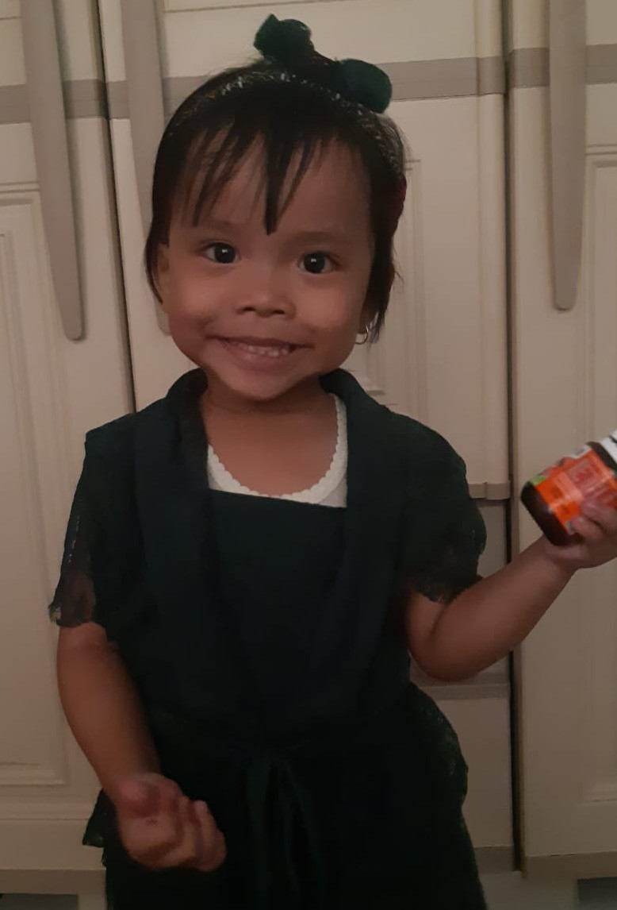

FOTO MASA KECIL

My Little Beginning ♡
CHAPTER 01
28 OCTOBER 2004
The Beginning
Semua cerita memiliki awal. Perjalananku dimulai pada tanggal 28 Oktober 2004. Sebuah awal dari banyak pengalaman, kenangan, dan cerita yang akan terus bertambah seiring waktu.
✿ Aku kecil